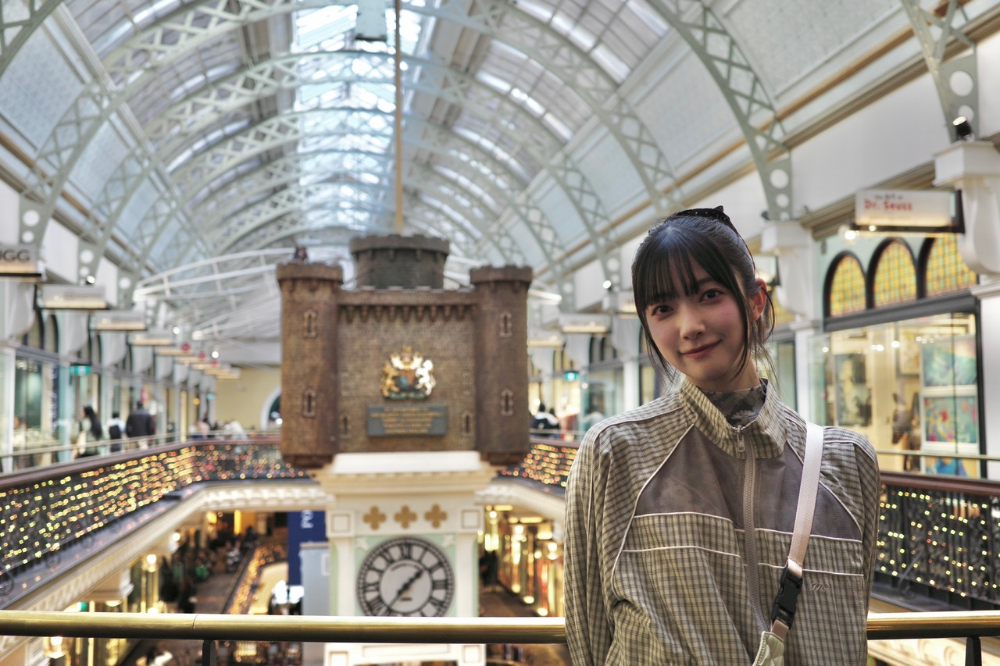
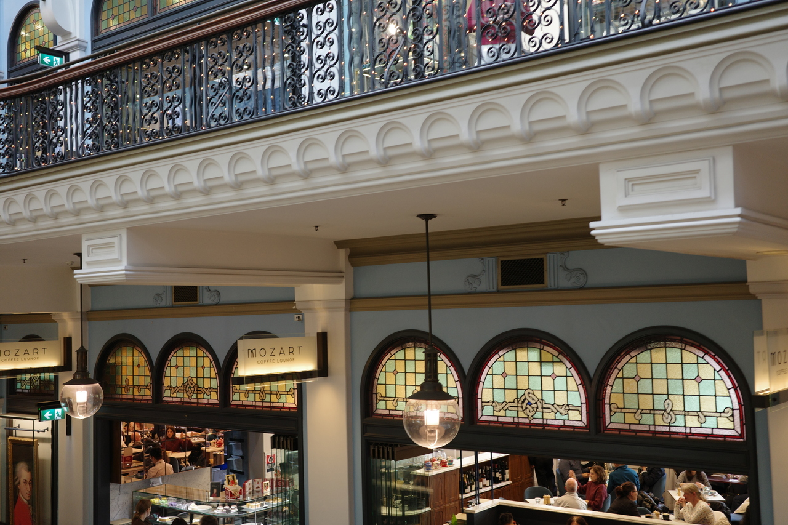
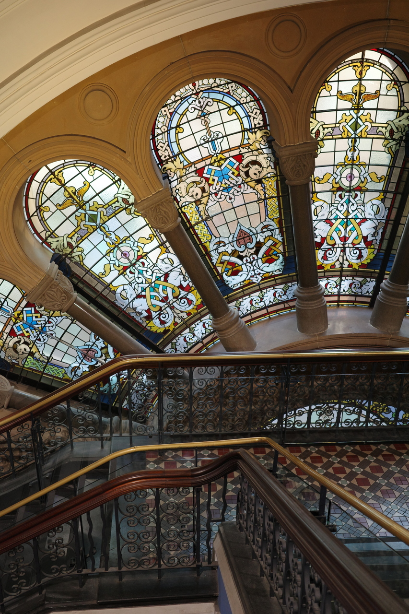
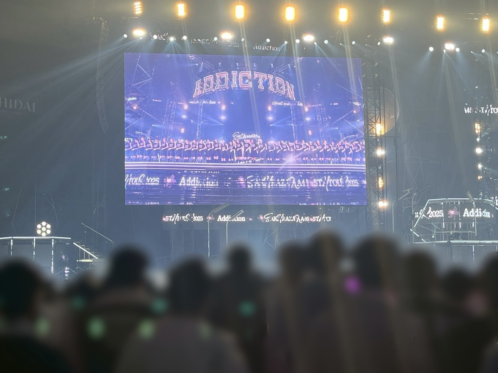
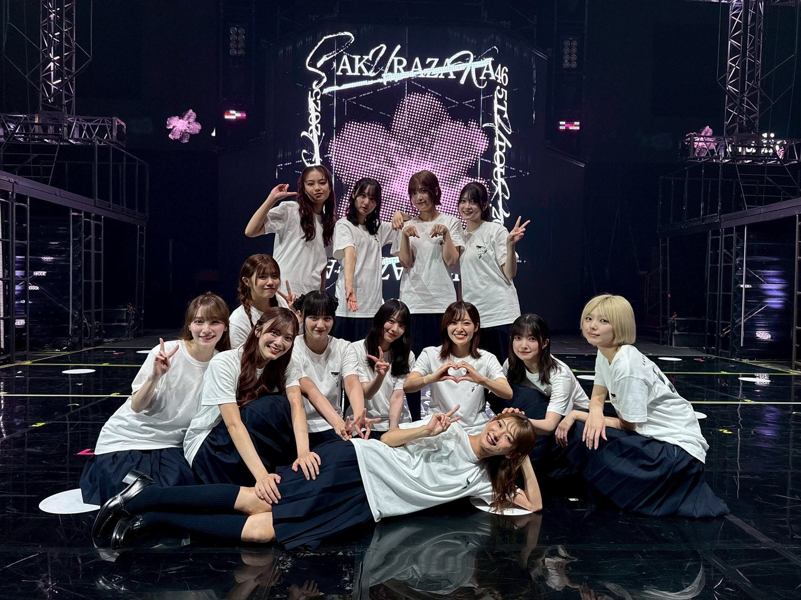
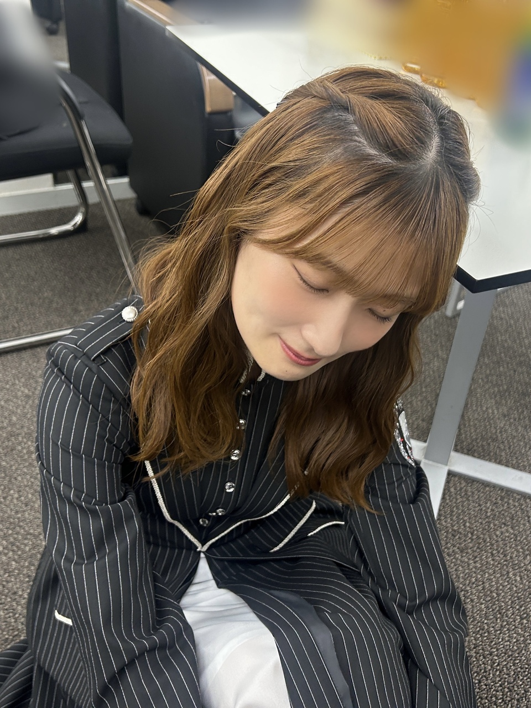

ぼっちの弊害
自由で気楽な〜♩ですけど、
写真に困りました
自撮りでもなくて
その空間に居るところを
誰かに撮ってもらいたいなぁって思って
なんとなくでお願いしてみたんですね、
優しそうで急いでいなさそうな方に

撮影スポットにたくさん人が集まって撮ってた
そこが空くのを待ってる間に、
壁の写真を撮りました
こんなところも綺麗なんだなあって感動してたら

自分と同じ様に、壁を撮っている方を見つけて
この方に写真撮ってもらいたい！って
ぴーんときました
思い出として数枚、撮ってもらうつもりだったけど
たくさん撮ってくれて
多分、20分くらい撮ってくれてたと思います
私もお礼に撮ります！って言ってみたけど、
自分の写真はいらないらしくて
私が撮ってもらっただけでお別れしました ˖*
またどこかで会うことがあるかな
ないかな
ない気がする
お互いの人生がただ、一瞬交差しただけで
考えるとせつなくなってくるかもしれない
写真お願いしてなかったら交差することもなかったから
話しかけてみてよかったな
素敵な時間だった〜

自分たちは
自分たちの人生がたまたまこの場所で、今
交差してるさなかなんだなぁって感じます

お互いのこれまでの選択が１つ違うだけで出会えてなかったかもしれない、！
それが今33人分
Buddies分
私たちを支えてくださる方々分、、
それはそれは天文学的な確率だ〜
だから星は綺麗なんだね ˖✮
一回交差した場所は、
何回振り返っても交差してる
何回も交差できたらもっと嬉しいけど
一回だけでも、
交差するかしないかで
その時間を振り返ることがあるかないかも変わる気がします
交差しないことが大半だと思うから
横断歩道で対面から歩いてくる人たちとぶつからずに渡り終えられるみたいに
一緒にエレベーターに乗っただけじゃ
出会ったことにはカウントしないかな
そこに居るのに交わらなかったら
出会ってないのと同じ
今そこに居るなら関わりたいよ

いのは今唯一同い年のメンバーだから
特別さみしいです

同い年って何で、
なんか嬉しいんだろうね
Buddiesは、櫻坂と交差する前には戻れなさそう？
あぁ楽しかったな〜って思い出してまた
心が満たされるような、
日常を少し忘れられるような時間になってたらいいな